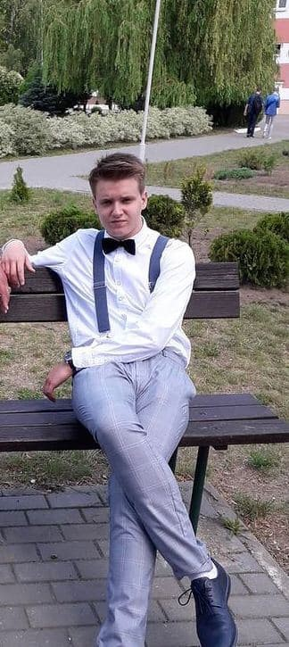

Після закінчення 11 класу в мене стояло питання про вибір університету. Так як мої улюблені предмети це географія і правознавство в мене було 2 варіанти куди поступати. Я хотів вступати в своєму рідному місті Бресті в Педагогічний університет ім. А. С. Пушкіна, на туризм і гостинність або до Львова в ЛНУ на міжнародні відносини Так як Львів є для мене 2 будинком і місто мене приваблює своєю атмосферою і своїми можливостями, я вирішив поступати в ЛНУ. Так як ідея стати дипломатом мені дуже подобалася і я хотів знайти нові знайомства в новому місті.
